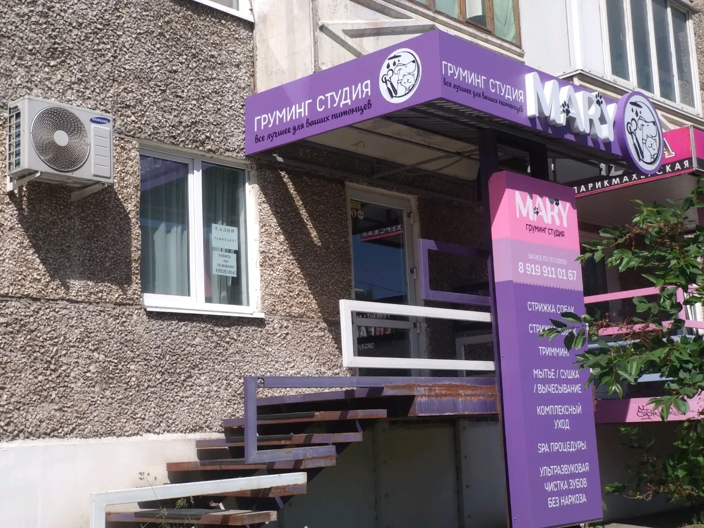
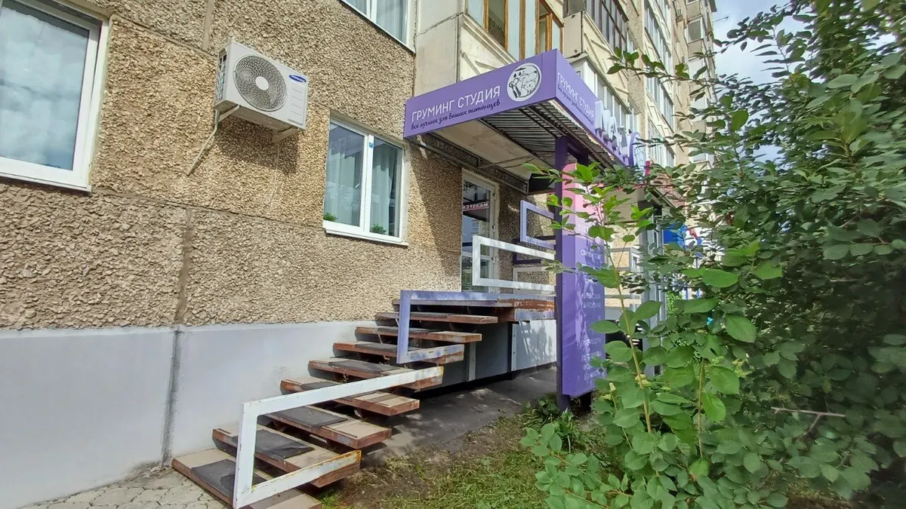
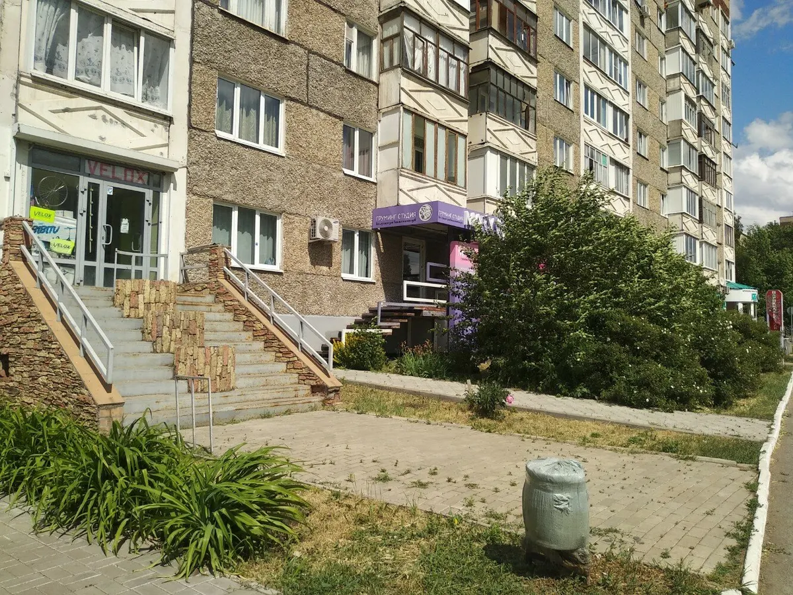

Груминг-студия · Ижевск
Груминг собак и кошек в Ижевске – цены и запись
Стрижка, тримминг, мытьё, сушка и комплексный уход. Студия открыта каждый день с 10:00 до 20:00.
- Ежедневно 10:00–20:00
- 4,3 на Яндекс.Картах
- Запись по телефону и во ВКонтакте

Услуги
Перечень услуг с вывески у входа. Цен на карточке нет: стоимость называет администратор при записи.
Стрижка и уход
- Стрижка собакуточнить
- Стрижка кошекуточнить
- Триммингуточнить
- Комплексный уходуточнить
Купание и спа
- Мытьё, сушка, вычесываниеуточнить
- SPA-процедурыуточнить
Стоимость зависит от породы, размера и состояния шерсти: администратор назовёт цену до начала работы.
Как записаться
- 01
Выбираете услугу
Стрижка, тримминг, мытьё или комплексный уход.
- 02
Звоните или пишете во ВКонтакте
Запись по телефону, студия открыта ежедневно с 10:00 до 20:00.
- 03
Называете породу и состояние шерсти
Так администратор сразу назовёт стоимость и время.
- 04
Приходите на Пушкинскую, 286
Вход с лестницей, вывеска «Mary груминг студия».


Что важно знать
Собаки и кошки
Стрижка и уход для тех и других.
Работаем каждый день
С 10:00 до 20:00, без выходных.
Аккуратно с колтунами
Клиентка пишет, что кота с сильными колтунами побрили быстро и хорошо.
Записаться можно во ВКонтакте
У студии есть сообщество, туда можно написать вместо звонка.
Отзывы с Яндекс.Карт
«Были сегодня с котом первый раз в салоне. Побрили кота быстро и хорошо, а были сильные колтуны. Персонал вежливый, мне всё очень понравилось, придём ещё.»
Юлия Н · 24 апреля 2024
«Все отлично. Девочкам, огромное спасибо!!! Профессионалы!»
татьяна кутявина · 4 июня 2026
«Очень классное место, хороший ремонт, грумер просто супер! Рекомендую!!!»
Денис Халявин · 24 мая 2022
Отзывы с карточки на Яндекс.Картах.
Запись на ближайшие дни
- Адрес
- Пушкинская ул., 286, Ижевск
- Часы
- Ежедневно 10:00–20:00
- Телефон
- +7 (919) 911-01-67